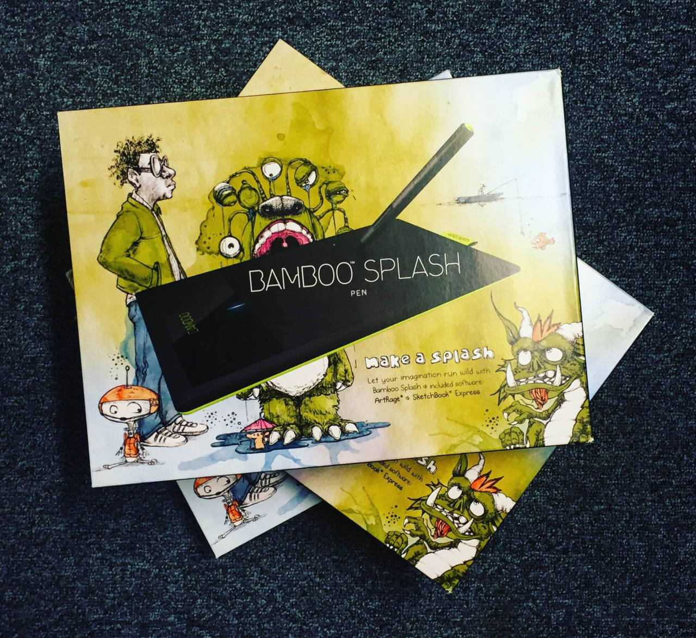

EDDSWORLD ARTFART

Hey Eddheads! Tom here. We’ve been overwhelmed by the arty response to The End so far and I thought why not throw a competition to celebrate it! We have 3 graphics tablets to give away and that’s exactly what we’re going to do!
So! Here’s the competition: HAND DRAW (on paper (obviously)) your favourite all-time Eddsworld moment and our 3 FAVOURITES will win one of these tablets! Pretty simple, right? Post your picture to Tumblr or Twitter and include the hashtag #EddsworldArtFart so we can find it. Oh… And the competition ends when The End Part 2 comes out (Wednesday, March 16th). Get to it!
- Tom